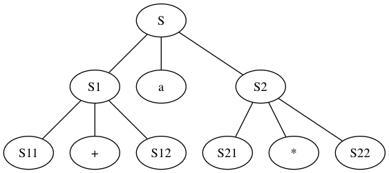

2.2.1
s -> s s *
-> s a *
-> aa + a*
- graphviz 节点名不能重复, sad

- 只支持自身
+*运算的语言
2.2.2
0 1 0 1..... (0 1)序列必须出现一次a + a | a - a | ...
2.2.4
expr -> expr expr op | digit
digit -> [0 - 9]*
list -> list , id | id
list -> id, list | id
expr -> expr + term | expr - term | term
term -> term * unary | term / unary | unary
unary -> + factor | - factor | factor
factor -> id | num | (expr)
2.2.5
- $$S_{n} = 2^{n} * 3 | 2^{n} * 9 | 2^{(n + 1)} * 3 | 2 ^ {n} * 15 $$
- 常数都是3的倍数， 所以能够被3整除
2.2.6
- 罗马数字编码为阿拉伯数字
I -> 1
X -> 10
C -> 100
M -> 1000
V -> 5
L -> 50
D -> 500
-
理解文法
- 相同的数字连写， 所表示这些数字相加得到的数,
II = 2 - 小的数字在大的数字右边， 所表示的数等于数字相加得到的数
VI = 6 - 小的数字在大的数字左边， 所表示的数等于大数减小数得到的数，
IV = 4
- 相同的数字连写， 所表示这些数字相加得到的数,
-
文法
- smallDigit -> I | II | III | ε
- digit -> smallDigit | I V | V smallDigit | I X
- smallTen -> X | XX | XXX
- ten -> smallTen | X L | L smallTen | X C
- smallHundred -> C | CC | CCC
- hundred -> smallHundred | C D | D smallHundred | C M
- thousand -> M | MM | MMM | ε
- romanNum -> thousand hundred ten digit
2.3.1
expr -> {print("+")} expr + term
| {print("-")} expr - term
| term
term -> print("*") term * factor
| print("/") term / factor
| factor
factor -> num | (expr)
2.3.2
9 5 - 2 *
E -> {print("(")} E {print(op)} E {print(")"}} op | digit {print(digit)}
2.3.3
num -> thousand hundred ten digit
{ num.roman = thousand.roman || hundred.roman || ten.roman || digit.roman;
print(num.roman)}
thousand -> low {thousand.roman = repeat('M', low.v)}
hundred -> low {hundred.roman = repeat('C', low.v)}
| 4 {hundred.roman = 'CD'}
| high {hundred.roman = 'D' || repeat('X', high.v - 5)}
| 9 {hundred.roman = 'CM'}
ten -> low {ten.roman = repeat('X', low.v)}
| 4 {ten.roman = 'XL'}
| high {ten.roman = 'L' || repeat('X', high.v - 5)}
| 9 {ten.roman = 'XC'}
digit -> low {digit.roman = repeat('I', low.v)}
| 4 {digit.roman = 'IV'}
| high {digit.roman = 'V' || repeat('I', high.v - 5)}
| 9 {digit.roman = 'IX'}
low -> 0 {low.v = 0}
| 1 {low.v = 1}
| 2 {low.v = 2}
| 3 {low.v = 3}
high -> 5 {high.v = 5}
| 6 {high.v = 6}
| 7 {high.v = 7}
| 8 {high.v = 8}
2.3.4
romanNum -> thousand hundred ten digit {romanNum.v = thousand.v || hundred.v || ten.v || digit.v; print(romanNun.v)}
thousand -> M {thousand.v = 1}
| MM {thousand.v = 2}
| MMM {thousand.v = 3}
| ε {thousand.v = 0}
hundred -> smallHundred {hundred.v = smallHundred.v}
| C D {hundred.v = smallHundred.v}
| D smallHundred {hundred.v = 5 + smallHundred.v}
| C M {hundred.v = 9}
smallHundred -> C {smallHundred.v = 1}
| CC {smallHundred.v = 2}
| CCC {smallHundred.v = 3}
| ε {hundred.v = 0}
ten -> smallTen {ten.v = smallTen.v}
| X L {ten.v = 4}
| L smallTen {ten.v = 5 + smallTen.v}
| X C {ten.v = 9}
smallTen -> X {smallTen.v = 1}
| XX {smallTen.v = 2}
| XXX {smallTen.v = 3}
| ε {smallTen.v = 0}
digit -> smallDigit {digit.v = smallDigit.v}
| I V {digit.v = 4}
| V smallDigit {digit.v = 5 + smallDigit.v}
| I X {digit.v = 9}
smallDigit -> I {smallDigit.v = 1}
| II {smallDigit.v = 2}
| III {smallDigit.v = 3}
| ε {smallDigit.v = 0}
2.3.5
92+3- => -+923
expr -> {print(op)} expr expr op | digit {print(digit)}
2.6.1
if (peek == '/') {
char nextLetter = (char) System.in.read();
/*
1. 判断是否是否以 // 开头
2. 如果是的则丢弃这行内容
*/
if (nextLetter == '/') {
do {
nextLetter = (char) System.in.read();
} while (nextLetter != '\n');
peek = ' ';
}
/*
1. 判断是否以 /* 开头, 结尾
2. 如果是的则丢弃这段内容
*/
if (nextLetter == '*') {
char nextCharLetter = ' ';
do {
nextLetter = (char) System.in.read();
nextCharLetter = (char) System.in.read();
} while (nextLetter != '*' && nextCharLetter != '/');
}
}
2.6.2
if (peek == '<' || peek == '=' || peek == '!' || peek == '>') {
char nextCharLetter = (char) System.in.read();
if (nextCharLetter == '=') {
peek = ' ';
return new Opeartor(Tag.OPERATOR, "" + peek + nextCharLetter);
} else {
peek = nextCharLetter;
return new Opeartor(Tag.OPERATOR, "" + peek);
}
}
2.6.3